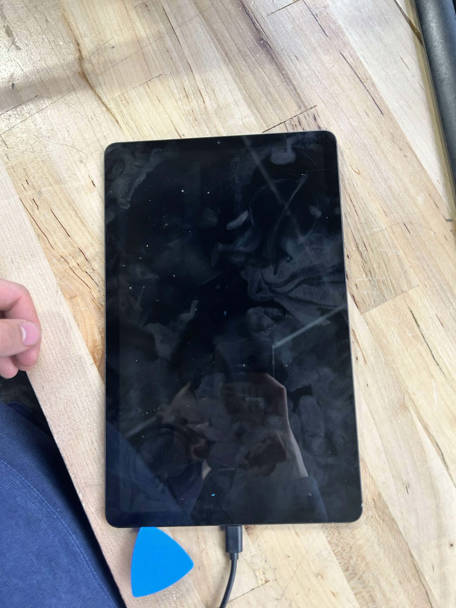

junior week feb. 5, 2026
slow progress on the keycap
(hopefully) fixed the left enter key. still waiting on the 3d printer to test it before resin printing
while cleaning the key up, i got these errors by accident (due to just deleting faces that were messed up)
fixed it up, and that's all i did with the keyboard this week.
p118 charger
so my dad has this ryobi p118 charger that's broken so i decided to take a look and poke around

didn't really find much info, but miles explained how the battery charger works, and i accidently shocked myself with 120v ac.
reflow oven
forgot to take photos opps.
anyways mr. christy wanted me to look at the reflow oven because it takes an extremely long time to boot / wouldn't boot at times
we tried a few things and nothing worked. eventually mr. christy told me to write an adafruit form addressing the problem, and we found the solution like that
turns out some random problem due to interferences with i2c from 3.3v to 5v because we didn't cut the 5v connector
haven't cut the connector yet, but testing the boot time without the sensor and then reconnecting it seems to work perfectly fine, so that was the problem
tablet
my friend adam lewis has this samsung tablet that isn't holding charge, so i decided to try and take a look at it.
initial idea was to just open it up and double check all the connections, so that's what i did

however, even after doing so it didn't work. (sorry adam). not too sure what the problem is, but yeah.
gotta lock back in next week for the keyboard. hopefully the 3d printer will be up and euan doesn't hog it.